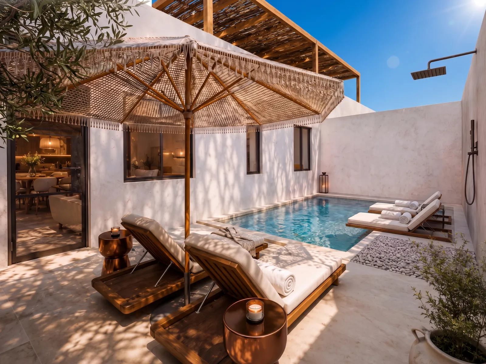
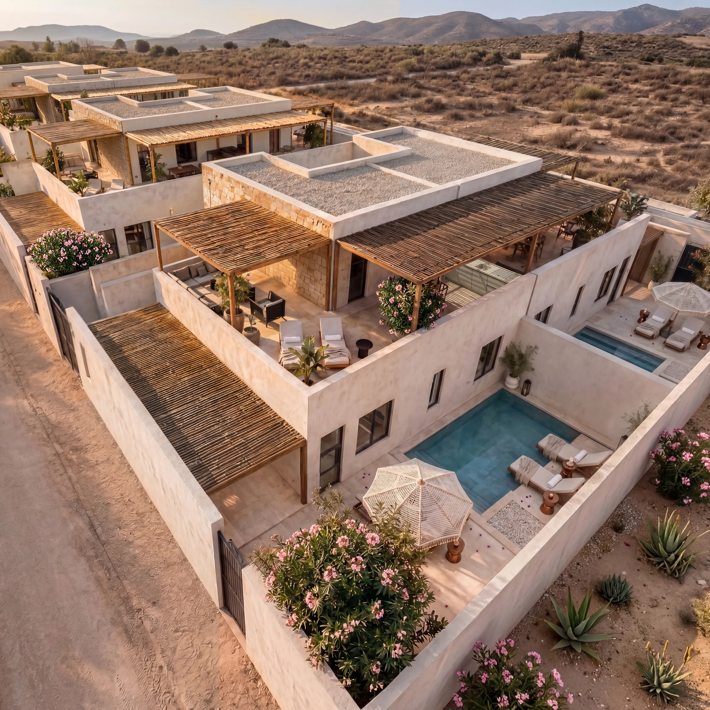
Sal Rei·Boa Vista
La tua villetta privata a Boa Vista, tra dune e oceano
Scorri
Il progetto
Una casa pensata per vivere Boa Vista con semplicità
Desert Retreat nasce da un’idea semplice: creare un piccolo progetto residenziale composto da villette indipendenti, ciascuna con ingresso autonomo, spazi esterni privati e piscina privata. Un luogo pensato per vivere Boa Vista con libertà, privacy e comfort, in un contesto naturale luminoso e tranquillo, senza eccessi e senza promesse fuori scala.
Non un resort. Non un prodotto di lusso. Desert Retreat è una proposta concreta di villette indipendenti, pensata per chi desidera una casa a Boa Vista da usare per sé, per le vacanze o per una possibile gestione locativa, con la tranquillità di un progetto seguito da MGM Cape Verde nelle principali fasi del percorso.
Un progetto raccolto, semplice e riservato, pensato per offrire più privacy e indipendenza rispetto a una soluzione residenziale tradizionale.
Concetto architettonico
Spazi semplici e funzionali, pensati per alternare privacy, luce naturale e vita all’aperto
Gli ambienti interni sono organizzati per offrire spazi semplici, comodi e ben collegati con l’esterno. Patio, piscina e terrazze diventano così parti vive della casa, da usare ogni giorno per rilassarsi, mangiare all’aperto o godersi il clima di Boa Vista.
Nel contesto dell’isola, il progetto privilegia soluzioni pratiche: zone d’ombra, aperture studiate, ventilazione naturale e passaggi fluidi tra interno ed esterno, per rendere la villetta piacevole da vivere nelle diverse ore della giornata.
Materiali sobri, colori chiari e finiture coerenti con il paesaggio contribuiscono a creare un’immagine semplice, luminosa e ben inserita nel contesto, senza eccessi e con attenzione alla funzionalità.


Le ville
Ogni villetta è pensata per vivere bene dentro e fuori
La villetta è organizzata per essere comoda e facile da vivere: zona giorno open space, cucina attrezzata, due camere al piano terra e una camera matrimoniale al piano superiore. Completano gli spazi i bagni en suite, un ripostiglio indipendente e le aree esterne dedicate al relax. Il patio con piscina privata diventa il centro naturale della casa.
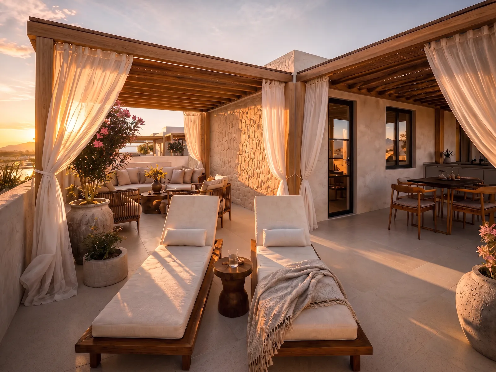
3 camere da letto
Due camere al piano terra e una suite matrimoniale al piano superiore, con bagni privati e spazi pensati per il comfort della famiglia e degli ospiti.
Piscina privata
Ogni villa dispone di una piscina esclusiva nel patio, con area relax, lettini e doccia esterna.
Terrazza panoramica
Uno spazio coperto al piano superiore, ideale per leggere, ricevere ospiti o osservare la luce di Boa Vista nelle diverse ore del giorno.
Cucina attrezzata
Zona living open space con cucina integrata, piano cottura, forno e superfici di lavoro funzionali.
Ripostiglio indipendente
Locale di servizio con accesso esterno, utile per attrezzature, biciclette, valigie o manutenzione.
Arredamento opzionale
La villa è consegnata rifinita e senza arredi. Su richiesta, MGM propone tre livelli di furnishing: Essential, Signature e Prestige.
La materia
Costruire per appartenere,
non per stupire.
Crediamo nei progetti semplici, ben pensati e destinati a durare nel tempo. Desert Retreat non cerca di apparire più di ciò che è: un piccolo progetto di villette indipendenti, con spazi privati, piscina e una distribuzione funzionale per vivere Boa Vista con libertà, comfort e naturalezza.
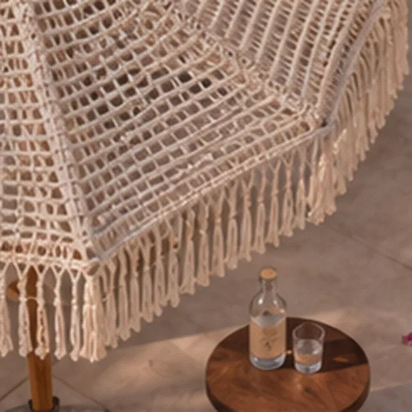
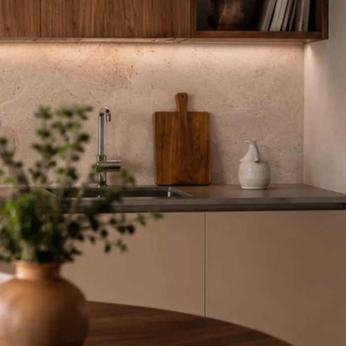
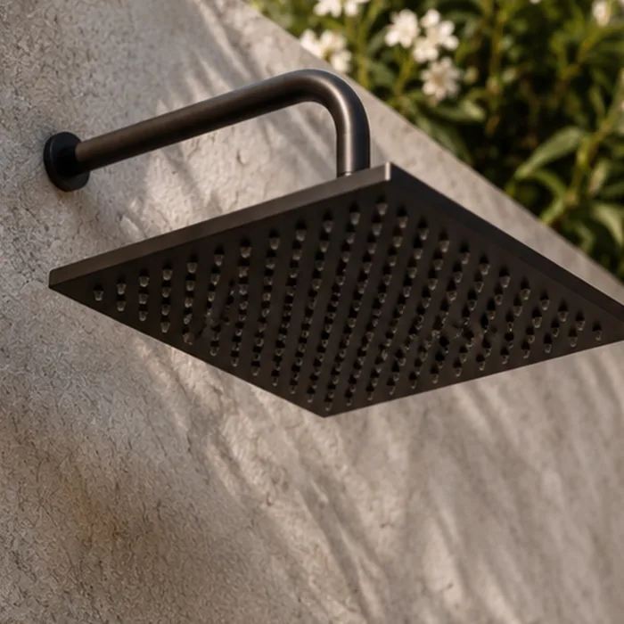
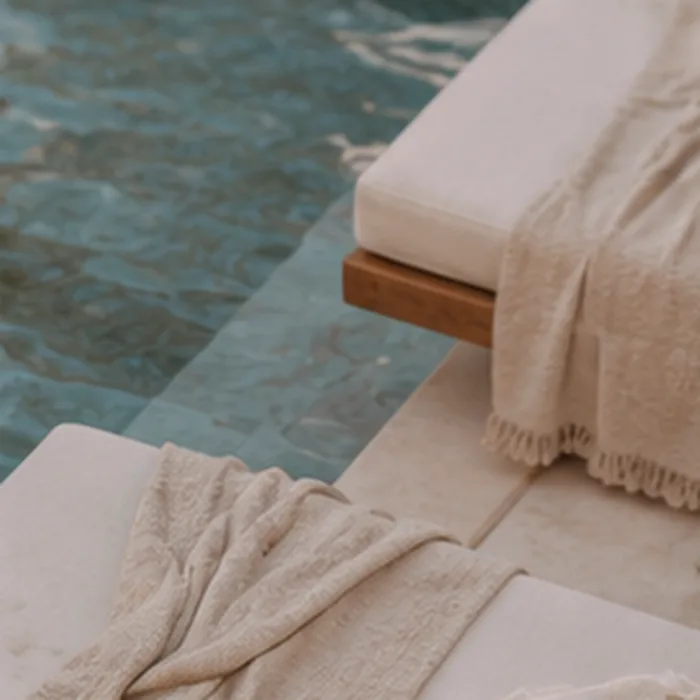
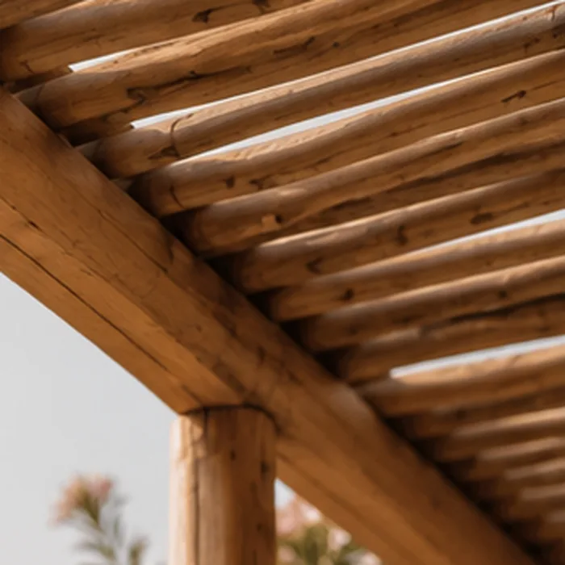
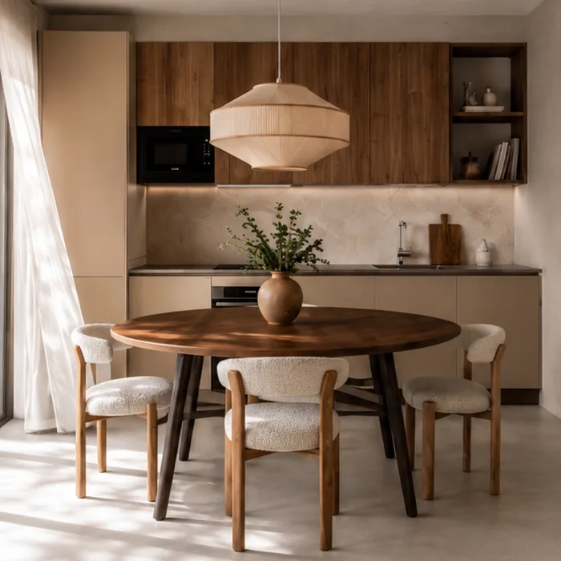
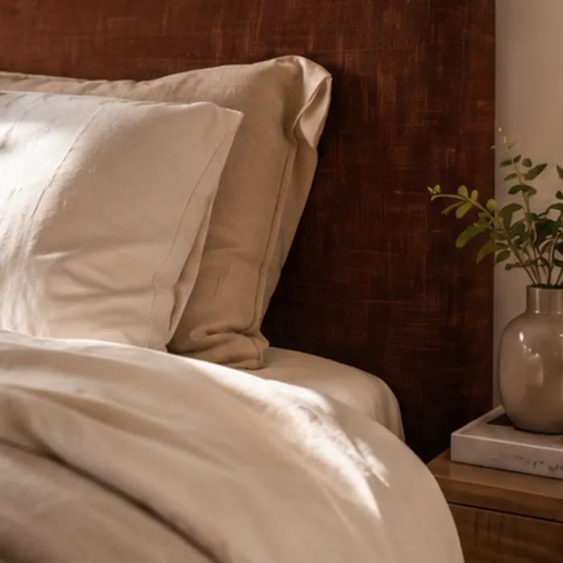
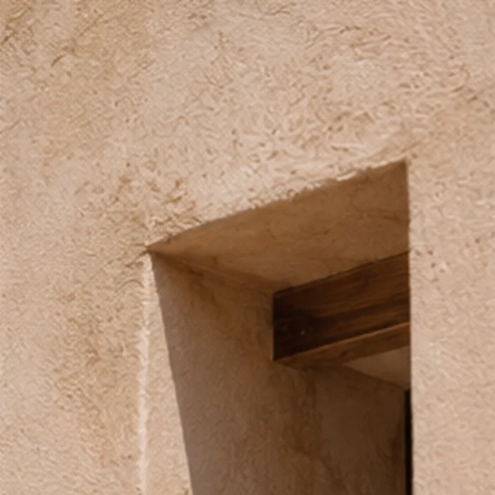
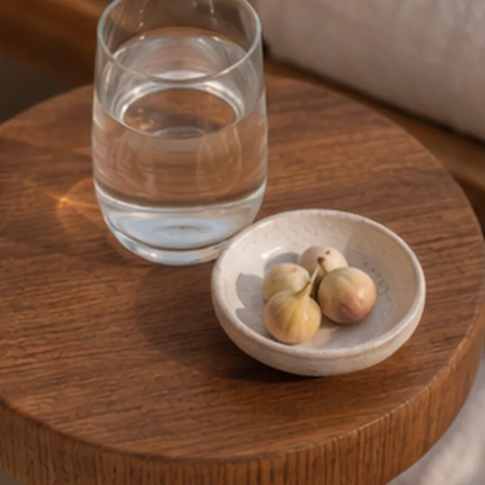
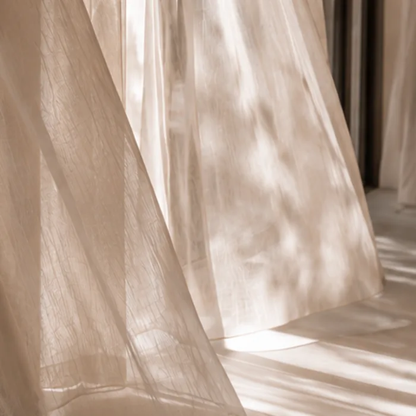
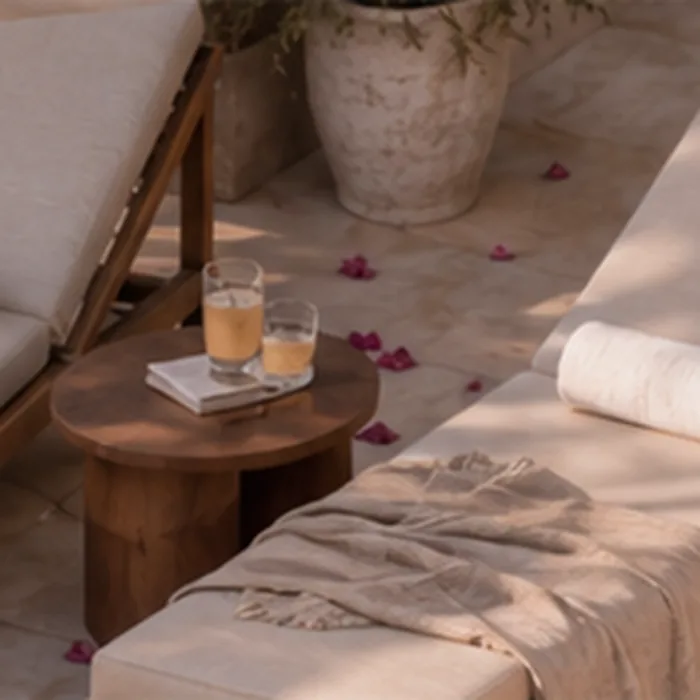
Gli spazi
Dove l’aria entra e il tempo rallenta.
Vivere qui significa passare con naturalezza dagli spazi interni alle aree esterne, tra patio, piscina privata e terrazze aperte alla luce di Boa Vista. La casa accompagna il ritmo della giornata con ambienti semplici, privacy e zone pensate per rilassarsi all’aperto. Non un luogo da attraversare in fretta, ma una villetta da vivere con calma, libertà e misura.
Prezzi e configurazioni
Una base pronta, tre modi per viverla
Ogni villetta viene proposta in configurazione base, consegnata chiavi in mano e completamente rifinita, pronta per essere arredata secondo il proprio gusto e le proprie esigenze. L’arredamento non è incluso nel prezzo base, ma può essere aggiunto attraverso tre pacchetti curati da MGM Cape Verde, pensati per rendere la casa più comoda, personale o pronta alla gestione locativa.
Prezzo base
da €275.000 Villa base, chiavi in manoArredamento non incluso. Disponibile come servizio opzionale.
La villa base include
- Struttura, fondazioni e opere murarie
- Impianti elettrici, idraulici e clima
- Pavimenti, rivestimenti e ceramiche
- Infissi, porte interne e serramenti
- Sanitari, rubinetteria e bagni rifiniti
- Piscina privata, patio e aree esterne
Essential
Pronta all’uso
Arredamento funzionale, coordinato e resistente, per chi desidera una villa pronta con uno stile pulito, neutro e facile da mantenere.
Più sceltoSignature
Equilibrio e materia
Un progetto d’interni più completo, con materiali di pregio, arredi selezionati, illuminazione studiata e outdoor living curato.
Prestige
Su misura
Interior design personalizzato, materiali d’eccellenza, arredi su misura e dettagli di fascia alta, per una dimora distintiva.
Perché investire
Una proprietà privata a Boa Vista, con possibilità di gestione quando non la utilizzi
Boa Vista è una destinazione sempre più osservata da chi cerca una casa al sole, in un contesto ancora semplice, naturale e accessibile. Il prezzo d’ingresso rimane interessante rispetto a molte località mediterranee, mentre cresce l’attenzione verso immobili indipendenti, ben organizzati e facili da gestire.
Mercato in crescita
Stabilità, attrattività turistica, clima favorevole e prezzi ancora competitivi. Una destinazione emergente con domanda crescente.
Prodotto limitato
Otto ville indipendenti, ciascuna con piscina e spazi esterni privati. La scarsità aumenta la percezione di esclusività.
Gestione chiavi in mano
MGM accompagna l’acquirente dalla firma alla consegna e, su richiesta, nella gestione locativa della villa.
Struttura del gruppo
Un ecosistema operativo tra Svizzera e Capo Verde, con competenze in sviluppo, gestione, legale, finance e property management.
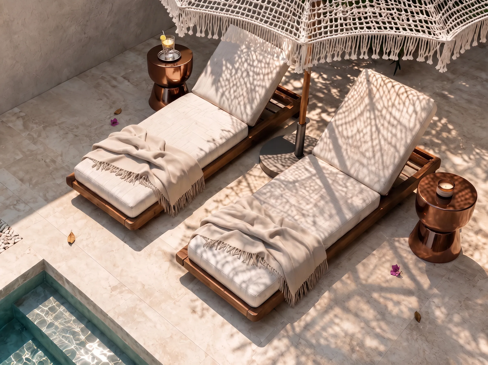
Prima una casa. Poi, se vuoi, anche un investimento.
Locazione gestita
Possibilità di reddito quando non la utilizzi
Desert Retreat nasce prima di tutto come casa privata, da vivere nei propri periodi a Boa Vista. Quando non viene utilizzata, il proprietario può scegliere di attivare un servizio opzionale di locazione turistica gestita tramite il nostro partner Rentopolis: pubblicazione, check-in e check-out, pulizie, manutenzione e rendicontazione. I periodi di disponibilità restano sempre sotto il controllo del proprietario.
4–7% annuo
Rendimento lordo annuo stimato, variabile in base ai periodi messi a disposizione per la locazione breve, alla stagionalità, all’occupazione effettiva e alla gestione operativa.
Il dato è puramente indicativo e non costituisce garanzia contrattuale. Ogni proiezione di reddito deve essere valutata caso per caso, sulla base dell’utilizzo personale della villetta e delle condizioni reali di mercato.
Richiedi il piano di rendimento →
Sal Rei · Boa Vista
Posizione
Tra dune, luce e Atlantico
Desert Retreat nasce nel paesaggio luminoso di Boa Vista, tra dune, vento e la presenza vicina dell’oceano Atlantico. A pochi minuti, Sal Rei offre ristoranti, servizi e vita locale, mentre la casa mantiene una dimensione più tranquilla e riservata. Un equilibrio semplice tra natura, comodità e libertà di vivere l’isola con il proprio ritmo.
- Praia Estoril e Praia de Chaves nelle vicinanze
- Centro di Sal Rei raggiungibile in pochi minuti
- Beach club e servizi turistici in espansione
- Clima secco e temperato gran parte dell’anno
- Aeroporto internazionale di Boa Vista con rotte europee
Acquistare con chiarezza
Un percorso guidato, dalla prima richiesta alla consegna
Acquistare una casa all’estero richiede chiarezza, documenti verificabili e un interlocutore presente sul territorio. MGM Cape Verde accompagna il cliente nelle principali fasi del percorso, dalla prima valutazione fino alla consegna.
Il valore non è solo nella villa, ma nella possibilità di affrontare l’acquisto con un processo più chiaro, ordinato e seguito passo dopo passo.
- 1
Richiesta e documentazione
Prima richiesta di informazioni e ricezione della documentazione completa.
- 2
Selezione della villa
Manifestazione di interesse e scelta della villa più adatta.
- 3
Due diligence
Verifiche legali e urbanistiche, con il supporto del team.
- 4
Contratto preliminare
Firma del preliminare di compravendita con piano di pagamento personalizzato.
- 5
Rogito notarile
Rogito e trasferimento della proprietà.
- 6
Consegna e post-vendita
Consegna della villa e, su richiesta, attivazione dei servizi.
Domande frequenti
Le risposte alle domande più comuni
Gli stranieri possono acquistare immobili a Capo Verde?
Sì. A Capo Verde i cittadini stranieri possono acquistare immobili attraverso un percorso documentale chiaro e verificabile. MGM Cape Verde accompagna il cliente nelle principali fasi, mettendo a disposizione le informazioni necessarie e coordinando il processo con i professionisti locali.
Qual è il processo di acquisto?
Il percorso accompagna il cliente dalla prima richiesta di informazioni fino alla consegna della villa: manifestazione d’interesse, verifica documentale, contratto preliminare, rogito notarile e consegna. Ogni passaggio viene spiegato nella sezione dedicata, in modo da rendere il processo più chiaro e facile da seguire.
Quali tasse e costi accessori sono previsti?
Oltre al prezzo della villetta sono previsti imposte, oneri e costi accessori legati all’acquisto. MGM Advisory può supportare il cliente nella verifica preliminare e nel coordinamento con i professionisti locali, in modo da valutare gli importi in base alla situazione personale dell’acquirente prima della firma.
È possibile ottenere un finanziamento?
In alcuni casi può essere possibile valutare soluzioni di finanziamento, anche tramite istituti locali o internazionali. La fattibilità dipende dal profilo dell’acquirente, dall’importo richiesto e dalle condizioni del singolo istituto. MGM Advisory può supportare il cliente nella verifica preliminare e nel coordinamento con i referenti specializzati.
L’acquisto dà diritto alla residenza?
L’acquisto di un immobile a Capo Verde non garantisce automaticamente il diritto di residenza. Eventuali percorsi di soggiorno o residenza devono essere valutati caso per caso con professionisti specializzati. MGM Advisory può supportare il cliente nella raccolta delle informazioni e nel coordinamento dei referenti locali.
Come funziona la gestione locativa?
È un servizio opzionale. Su richiesta, il proprietario può attivare la gestione locativa tramite il nostro partner Rentopolis, che può occuparsi di pubblicazione, check-in, pulizie, manutenzione e rendicontazione. MGM Cape Verde resta il punto di riferimento per il coordinamento generale, mentre il proprietario mantiene il controllo sui periodi di disponibilità della villetta.
Chi è MGM Cape Verde e quali garanzie offre?
MGM Cape Verde coordina lo sviluppo del progetto e accompagna il cliente nel percorso di acquisto, tra Svizzera e Capo Verde, con il supporto di MGM Advisory, professionisti locali e partner specializzati. L’obiettivo è offrire un processo chiaro, ordinato e documentato, con informazioni tecniche e contrattuali verificabili in ogni fase principale.
Posso visitare il sito prima di acquistare?
Sì. È possibile prenotare un inspection tour per visitare l’area del progetto, conoscere il contesto di Boa Vista e incontrare il team MGM Cape Verde. Una visita sul posto permette di valutare meglio la posizione, il prodotto e il percorso di acquisto.